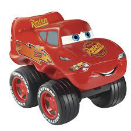

Algo importante é sobre o tamanho das imagens quanto maior o tamanho mais KB ela tem, ou seja mais pesada no servidor, ocupando mais espaço, uma forma para se resolver isso é reduzindo o tamanho manualmente tipo no foto photoshop.
Imagens png costumam ser de fundo transparente ótimas para usar em um site. exemplo a imagem abaixo.
Sobre a tag de Imagem pode ser usada de varias formar um ex:
<img src="./imagens/carros imagesn.webp" width="10%" alt="imagen do maquin">

Observe que usei a tag src para chamar a imagem (de um diretório) mas também posso depois de src por a url da img, e o width para dar proporção ao tamanho da imagem, porém se eu usar width 20 ele dá um valor, e se eu usar width 20% é outro valor. veja abaixo.
Aqui foi um exemplo dos valores da width
Corretade se colocar uma Imagem
Os melhores formatos para se trabalhar com img é .jpeg e .png, em uma resolução 50
Para que o google reconheça melhor o site devemos otimizar o site colocando a imagem dentro das tag picture
, e ao invés de dimensionar ela usando width
, mas usar o algum editor de imagem, criar 3 tamanhos( 300x300, 700x700 e 1000x1000), para melhor adaptar em qualquer aparelho.
Esse seria o código com apenas uma imagem.
<picture>
<img src="a origem da imagem" alt="sempre o'que a imagen significa">
</picture>
Agora vamos ao código que realmente vai fazer a diferença, e repare que acrescentamos media=
com 50px a mais em cada imagem para que na hora q diminuir o navegador não dê um pulo e sim suavize.
E tem a seguinte ordem para seguir, da menor para a maior e sempre a última é a maior e não contém a tag media
, observe o código abaixo.
<picture>
<source media="(max-width: 750px)" srcset="foto pequena" type="image/png">
<source media="(max-width: 1050)" srcset="foto média" type="image/png">
<img src="o arquivo da imagen" alt="descrição da imagen">
</picture>
Observe que todos finais em relação a media ou download, é final type
, e por isso para saber o type do arquivo que estamos pondo usamos o site.
Nem todas as imagens tem seus direitos autorais se souber procurar
Como procurar de maneira eficas.
No google
Google→imagens→ferramentas→direito de uso
Outros sites bons são: